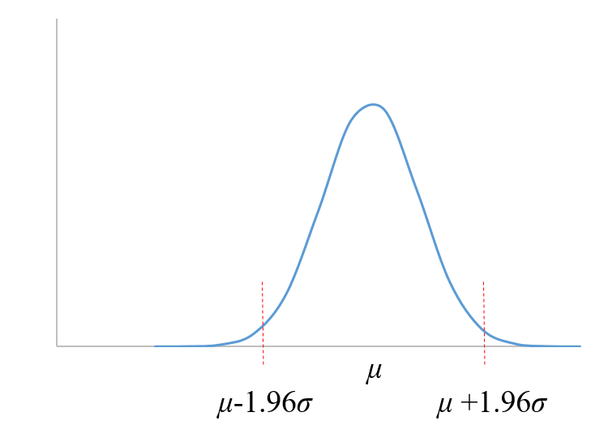
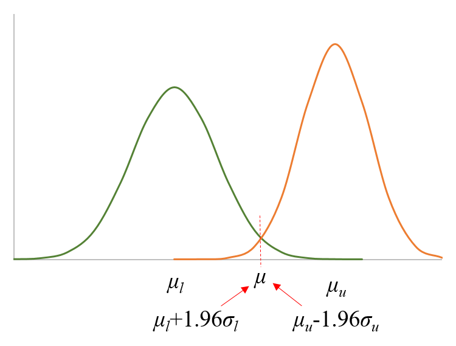

列联表分析
| 发生 | 未发生 | 合计 | |
|---|---|---|---|
| 对照组 | a | b | \(N_0\) |
| 试验组 | c | d | \(N_1\) |
率比（Risk Ratio），也称相对危险度（Relative Risk）: \(RR=\frac{a/N_0}{c/N_1}\)，相对量，这里表示对照组发生事件是试验组发生事件的多少倍。
率差（Rate Difference）: \(RD=\frac{a}{N_0}-\frac{c}{N_1}\)，绝对量，率差能够直观的看出疗效的大小，可理解为试验组比对照组多百分之多少的可能发生事件。
优势比，也称比值比（Odds Ratio）:\(OR=\frac{a/b}{c/d}\)，这里反映了组别之间发生事件的关联强度。
率差
假设样本均值等于总体均值，其置信区间以均值为中心分布在其两侧。方法：正态近似法。

data test1;
gp="A";r=0;n=13;output;
gp="A";r=1;n=48;output;
gp="B";r=0;n=8;output;
gp="B";r=1;n=56;output;
run;
**** Method 1 ****;
proc freq data=test1;
tables gp*r/ riskdiff(cl=exact);
exact riskdiff;
weight n/ zeros;
run;假设样本均值不等于总体均值，样本出现在总体分布的置信区间内。方法：Miettinen and Nurminen.

试验组与对照组的比率不是都为100%或0%（MN方法）
data test1;
gp="A";r=0;n=13;output;
gp="A";r=1;n=48;output;
gp="B";r=0;n=8;output;
gp="B";r=1;n=56;output;
run;
**** Method 1 ****;
proc freq data=test1;
tables gp*r/ riskdiff(cl=mn);
weight n/ zeros;
ods output pdiffcls=mn;
run;试验组与对照组的比率都为100%或0%（MN方法）
%macro ratediff(n1=,n1_event=,n2=,n2_event=,alpha=,side=);
data mienur;
n1=&n1.;
a1=&n1_event.;
a2=n1-a1;
p1=a1/n1;
n2=&n2.;
a3=&n2_event.;
a4=n2-a3;
p2=a3/n2;
z=probit(1-&alpha./&side.);
d=p1-p2;
**率差置信区间下限;
**率差置信区间上限;
l_diff=-(z**2*(a1+a3)/((a1+a3-1)*a1))/((z**2*(a1+a3)/((a1+a3-1)*a1))+1);
u_diff= (z**2*(a1+a3)/((a1+a3-1)*a3))/((z**2*(a1+a3)/((a1+a3-1)*a3))+1);
run;
%mend ratediff;
%ratediff(n1=100,n1_event=100,n2=100,n2_event=100,alpha=0.05,side=2);分层的Miettinen-Nurminen方法计算率差与P值
%macro rrv(c0,c1,s0,s1,z,rd,ra,rb,vv);/*根据rd计算r0和r1*/
c0=&c0.;
c1=&c1.;
s0=&s0.;
s1=&s1.;
c=c1+c0;
s=s1+s0;
p1=c1/s1;
p0=c0/s0;
z2=&z.**2;
rd=&rd.;
l3=s;
l2=(s1+2*s0)*rd-s-c;
l1=(s0*rd-s-2*c0)*rd+c;
l0=c0*rd*(1-rd);
q=l2**3/(3*l3)**3-l1*l2/(6*l3**2)+l0/(2*l3);
p=sign(q)*(l2**2/(3*l3)**2-l1/(3*l3))**0.5;
if p=0 then aa=0;
else aa=q/p**3;
if abs(aa)>1 then aa=1;
a=1/3*(pi+arcos(aa));
r0=2*p*cos(a)-l2/(3*l3);
r1=r0+rd;
v=(r1*(1-r1)/s1+r0*(1-r0)/s0)*s/(s-1);
&ra.=r0;
&rb.=r1;
&vv.=v;
%mend;
%macro stra_mn(dat=,stra=,trt=,c=,n=,alp=,Wmethod=2,all=0,out=);
%if &stra.=0 %then %do;
proc sort data=&dat. out=dat1;
by &trt.;
run;
data dat1x;
set dat1 nobs=nob;
by &trt.;
array ccc(2);
array nnn(2);
retain ccc: nnn:;
if first.&trt. then do;
i+1;
ccc(i)=&c.;
nnn(i)=&n.;
end;
if _N_=nob then do;
ca=ccc(1);
cb=ccc(2);
na=nnn(1);
nb=nnn(2);
output;
end;
keep ca cb na nb;
run;
data dat2;
set dat1x;
z=probit(1-&alp./2);
pi=constant("pi");
pa=ca/na;
pb=cb/nb;
/*计算置信下限*/
str=0;
qxq=0;
do qcyc=1 to 3;
poit=10**(-qcyc*2);
lmin=10;
str=str+qxq*poit*100;
do cyc=-99 to 99;
rdlx=str+cyc*poit;
%rrv(ca,cb,na,nb,z,rdlx,ra,rb,vv);
if abs(vv)<10**(-12) then vv=0;
rdx=pb-pa-(z*z*vv)**0.5; /*置信下限*/
if vv^=0 then diff=abs(rdx-rdlx);
if diff<lmin then do;
lmin=diff;
qxq=cyc;
end;
if &all.=1 then output;
end;
end;
rdl=str+qxq*poit;
/*计算置信上限*/
str=0;
qxq=0;
do qcyc=1 to 3;
poit=10**(-qcyc*2);
dmin=10;
str=str+qxq*poit*100;
do cyc=-99 to 99;
rdlx=str+cyc*poit;
%rrv(ca,cb,na,nb,z,rdlx,ra,rb,vv);
if abs(vv)<10**(-12) then vv=0;
rdx=pb-pa+(z*z*vv)**0.5; /*置信上限*/
if vv^=0 then diff=abs(rdx-rdlx);
if diff<dmin then do;
dmin=diff;
qxq=cyc;
end;
if &all.=1 then output;
end;
end;
rdu=str+qxq*poit;
/*Z统计量*/
rdlx=0;
%rrv(ca,cb,na,nb,z,rdlx,ra,rb,vv);
if abs(vv)<10**(-16) then Zsc=0;
else Zsc=-abs((pb-pa)/vv**0.5);
Pvalue=probnorm(Zsc)*2;
/*率差*/
rankdiff=pb-pa;
output;
%if &all.=1 %then %do;
keep diff rdx rdlx rdl ra rb vv rdl dmin rdu lmin str qxq;
%end;
%else %do;
keep rdl rdu dmin lmin Zsc Pvalue rankdiff ;
%end;
run;
%end;
/**************************************************/
/*分层MN*/
%else %do;
proc sort data=&dat. out=dat1;
by &stra. &trt.;
run;
data _NULL_;
set dat1 nobs=nob;
array cc(99);
array nn(99);
retain cc: nn:;
by &stra. &trt.;
x+1;
cc(x)=&c.;
nn(x)=&n.;
if _N_=nob then do;
grp=x/2;
do i=1 to grp;
call symputx("c"||strip(put(i,best.))||"_0",strip(put(cc(i*2-1),best.)));
call symputx("c"||strip(put(i,best.))||"_1",strip(put(cc(i*2),best.)));
call symputx("n"||strip(put(i,best.))||"_0",strip(put(nn(i*2-1),best.)));
call symputx("n"||strip(put(i,best.))||"_1",strip(put(nn(i*2),best.)));
end;
call symputx("Ntrt",strip(put(x/2,best.)));
end;
run;
data dat2;
array ca(&Ntrt.);
array cb(&Ntrt.);
array na(&Ntrt.);
array nb(&Ntrt.);
array pa(&Ntrt.);
array pb(&Ntrt.);
array ra(&Ntrt.);
array rb(&Ntrt.);
array vv(&Ntrt.);
array wfr(&Ntrt.);
array sw(&Ntrt.);
ntrt=&Ntrt.;
%do i=1 %to &Ntrt.;
ca&i.=&&c&i._0.;
cb&i.=&&c&i._1.;
na&i.=&&n&i._0.;
nb&i.=&&n&i._1.;
%end;
z=probit(1-&alp./2);
pi=constant("pi");
do i=1 to ntrt;
pa(i)=ca(i)/na(i);
pb(i)=cb(i)/nb(i);
end;
/*率差*/
ew=0;
do i=1 to ntrt;
%if &wmethod.=1 %then %do;
wfr(i)=(na(i)+nb(i));
%end;
%if &wmethod.=2 %then %do;
wfr(i)=1/(1/na(i)+1/nb(i));
%end;
ew=ew+wfr(i);
end;
rra=0;
rrb=0;
do i=1 to ntrt;
sw(i)=wfr(i)/ew;
rra=rra+sw(i)*pa(i);
rrb=rrb+sw(i)*pb(i);
end;
rankdiff=rrb-rra;
/*计算置信下限*/
str=0;
qxq=0;
do qcyc=1 to 3;
poit=10**(-qcyc*2);
lmin=10;
str=str+qxq*poit*100;
do cyc=-99 to 99;
rdlx=str+cyc*poit;
do i=1 to ntrt;
%rrv(ca(i),cb(i),na(i),nb(i),z,rdlx,ra(i),rb(i),vv(i));
if abs(vv(i))<10**(-12) then vv(i)=0;
end;
rra=0;
rrb=0;
vxv=0;
do i=1 to ntrt;
rra=rra+sw(i)*pa(i);
rrb=rrb+sw(i)*pb(i);
vxv=vxv+vv(i)*sw(i)*sw(i);
end;
rdx=rrb-rra-(z*z*vxv)**0.5; /*置信下限*/
diff=abs(rdx-rdlx);
if diff<lmin then do;
lmin=diff;
qxq=cyc;
end;
if &all.=1 then output;
end;
end;
rdl=str+qxq*poit;
/*计算置信上限*/
str=0;
qxq=0;
do qcyc=1 to 3;
poit=10**(-qcyc*2);
dmin=10;
str=str+qxq*poit*100;
do cyc=-99 to 99;
rdlx=str+cyc*poit;
do i=1 to ntrt;
%rrv(ca(i),cb(i),na(i),nb(i),z,rdlx,ra(i),rb(i),vv(i));
if abs(vv(i))<10**(-12) then vv(i)=0;
end;
rra=0;
rrb=0;
vxv=0;
do i=1 to ntrt;
rra=rra+sw(i)*pa(i);
rrb=rrb+sw(i)*pb(i);
vxv=vxv+vv(i)*sw(i)*sw(i);
end;
rdx=rrb-rra+(z*z*vxv)**0.5; /*置信上限*/
diff=abs(rdx-rdlx);
if diff<dmin then do;
dmin=diff;
qxq=cyc;
end;
if &all.=1 then output;
end;
end;
rdu=str+qxq*poit;
/*Z统计量*/
rdlx=0;
do i=1 to ntrt;
%rrv(ca(i),cb(i),na(i),nb(i),z,rdlx,ra(i),rb(i),vv(i));
if abs(vv(i))<10**(-12) then vv(i)=0;
end;
rra=0;
rrb=0;
vxv=0;
do i=1 to ntrt;
rra=rra+sw(i)*pa(i);
rrb=rrb+sw(i)*pb(i);
vxv=vxv+vv(i)*sw(i)*sw(i);
end;
Zsc=-abs((rrb-rra)/vxv**0.5);
Pvalue=probnorm(Zsc)*2;
output;
%if &all.=1 %then %do;
keep diff rdx rdlx rdl rra rrb vxv ra: rb: rdl dmin;
%end;
%else %do;
keep rdl rdu dmin lmin Zsc Pvalue rankdiff ;
%end;
run;
%end;
data &out.;
set dat2;
RateDiff=rankdiff;
LowerCL=rdl;
UpperCL=rdu;
Z=Zsc;
P=Pvalue;
keep ratediff LowerCL UpperCL Z P;
run;
%mend;
/*dat:输入的数据集文件名,stra:分层因素,trt:分组变量名,c:事件数的变量名,n:样本量的变量名,每一层的n都不能为0*/
/*Wmethod为权重计算方法,本次分析使用Wmethod=2*/
/*Wmethod=1: Wi=n0i+n1i*/
/*Wmethod=2: Wi=1/(1/n0i+1/n1i)*/
/*当stra设为0时,为不分层的MN方法*/